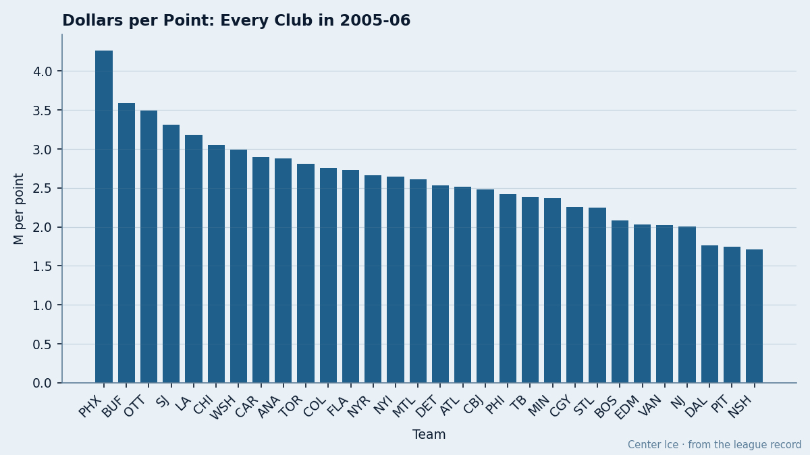
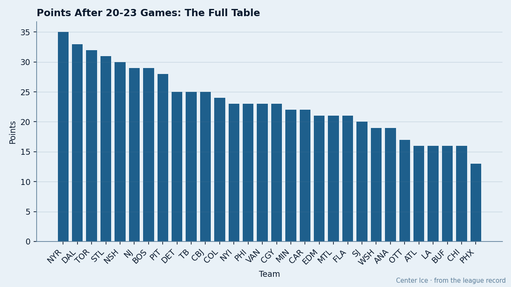
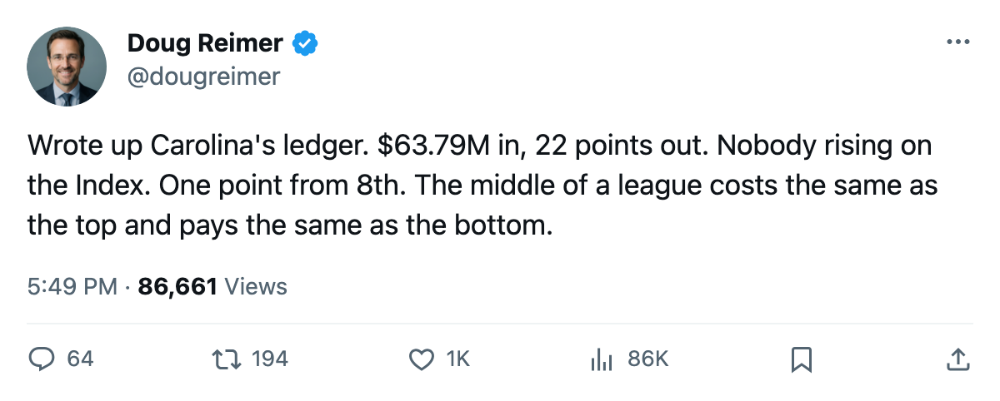
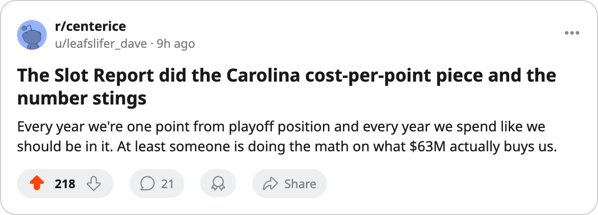

$63.79M, 1 Point From 8th, 0 Risers: The Carolina Ledger After 21 Games
The Hurricanes have the 9th-highest payroll in hockey, the 8th-worst cost per point, and no man on the Development Index's riser list.
 Doug ReimerAnalytics editor, ex-video coach · The Slot Report
Doug ReimerAnalytics editor, ex-video coach · The Slot Report
The piece
Carolina has $63.79M in salary and 22 points in 21 games. That is $2.90M per point, the 8th-worst in hockey. The Hurricanes sit 1 point behind the 8th-place line in the East, they have no player on the Bureau's Development Index riser list, and their club morale is 90.6, the 8th-lowest average in the league.
 Carolina Hurricanes generated $45.53M in revenue on 16,411 per game at $82 a ticket. The profit line reads $21.65M. The club is solvent. What $63.79M buys on the ice is a team that is neither cheap enough to rebuild nor expensive enough to contend.
Carolina Hurricanes generated $45.53M in revenue on 16,411 per game at $82 a ticket. The profit line reads $21.65M. The club is solvent. What $63.79M buys on the ice is a team that is neither cheap enough to rebuild nor expensive enough to contend.

No Index entry, no path forward
The Development Index lists form relative to a player's Book base. Across all 20 risers, no Carolina name appears. The 15 fallers include none either. The Hurricanes are the form-flat team: nobody rising, nobody crashing, everyone exactly where the Book already had them.
That flatness is what you would expect from a roster with 13 injury spells and 80 days lost.  Sean Hill75 has three separate stints on the shelf.
Sean Hill75 has three separate stints on the shelf.  Kevin Weekes84 has two.
Kevin Weekes84 has two.  Radek Dvorak75 is on the list. Brind'Amour, Druken, Rucchin, Markov (twice), Ozolinsh (twice), Hill (twice more): the medical tent is crowded and nobody in it is on a heater.
Radek Dvorak75 is on the list. Brind'Amour, Druken, Rucchin, Markov (twice), Ozolinsh (twice), Hill (twice more): the medical tent is crowded and nobody in it is on a heater.
The ice time argument starts here. If you are paying $63.79M for a flat roster with nobody trending up, you are buying what you have. And what you have, at 22 points, is a 1-point deficit to the 8th-place line with 61 games left. That is a ledger that does not move without a transaction or a breakthrough, and the Index says the breakthrough is not coming.
Two expiring deals, $13.15M, one producer
The contract-year class lists two Carolina names among the league's best 30 by overall rating. Kevin Weekes, 30, at $6.23M and a Book grade of 84, has played 15 games this season.  Jeff O'Neill84, 29, at $6.92M and a grade of 84, has 26 points in 21 games at a 102 pace.
Jeff O'Neill84, 29, at $6.92M and a grade of 84, has 26 points in 21 games at a 102 pace.
| player | position | salary | overall | gp | points | pace | morale |
|---|---|---|---|---|---|---|---|
| Jeff O'Neill | RW | $6.92M | 84 | 21 | 26 | 102 | 92 |
| Kevin Weekes | G | $6.23M | 84 | 15 | 89 |
O'Neill is the second-highest scorer on the roster and plays L1RW. Weekes plays 71% of Carolina's games at a 90% share of starts. Both roles are normal.
What does not compute is the cost. Two men at a combined $13.15M against a $63.79M payroll account for 20.6% of the cap for one 102-pace winger and a backup-calibre goaltender who has seen 15 starts. If O'Neill walks in July, Carolina's cost per point shifts to a number that makes $2.90M look like a bargain.
The morale number nobody talks about
At 90.6, Carolina sits 8th from the bottom on the Bureau's Morale Scale. The five men listed in the sheet's lowest-15 column from other clubs give you the floor. The Sabres are 86.9. The Blue Jackets are 87.0. Carolina is not in that territory, but 90.6 is not a room that is going to out-produce its grades.
The desk has been here before: high morale does not win games, but low morale is the signature of a room that has stopped believing the plan works. At 90.6, with no Index risers, with 80 days on the injured list, and with one point to close in a playoff race that runs 61 more games, the Carolina room is in the middle of the pack in a league where the middle of the pack finishes 9th.

What the table is not telling you
The East table shows Carolina Hurricanes at 22 points, 9th place, 1 behind PHI and NYI at 23. The gap looks close. The schedule does not help. Carolina has 16 divisional games left against four clubs that are all above or at .500 in the division. The Hurricanes went 2-0-1 in the first set of meetings against  Atlanta Thrashers,
Atlanta Thrashers,  Florida Panthers,
Florida Panthers,  Tampa Bay Lightning, and
Tampa Bay Lightning, and  Washington Capitals combined. They split with
Washington Capitals combined. They split with  Montreal Canadiens and
Montreal Canadiens and  New York Islanders outside the division.
New York Islanders outside the division.
The arithmetic: 22 points in 21 games. The 8th-place club in the East has 25 points. Carolina is the most expensive middle-of-the-road team in the East.
The trade question
Carolina's GM has $21.65M in profit. That is the 7th-highest in the league. The club can absorb a bad contract or add salary without touching revenue. The question is whether the front office believes the current roster closes the 1-point gap or whether O'Neill is sold before what the calendar has as the trade deadline, 113 days away.
O'Neill at $6.92M and 26 points is the only Carolina name that a contending club needs. His pace is 102. His grade is 84. His salary expires in 0 years. That is a rental with a 102 pace, which is a real piece at the deadline.
Weekes at $6.23M and 15 starts with 2 injury spells is the piece Carolina would like to move. No club needs a 30-year-old goalie on an expiring deal who has missed time twice. If the Hurricanes want to free that cap for a bottom-six centre or a third-pairing defenseman who actually plays, Weekes is the only lever.
The sheet says $63.79M in. 22 points out. $2.90M per point. No risers. No fallers. 80 days lost. One point from relevance. The ledger does not move on its own.

